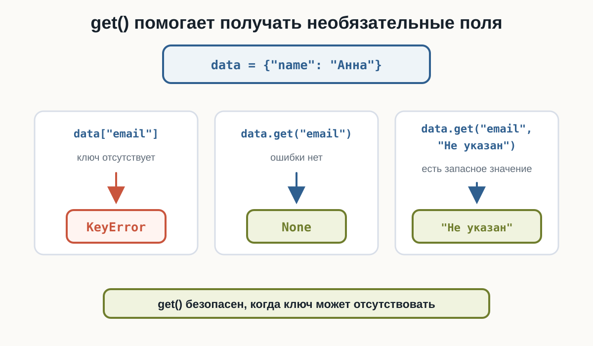
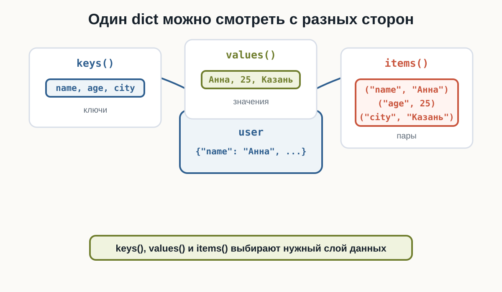
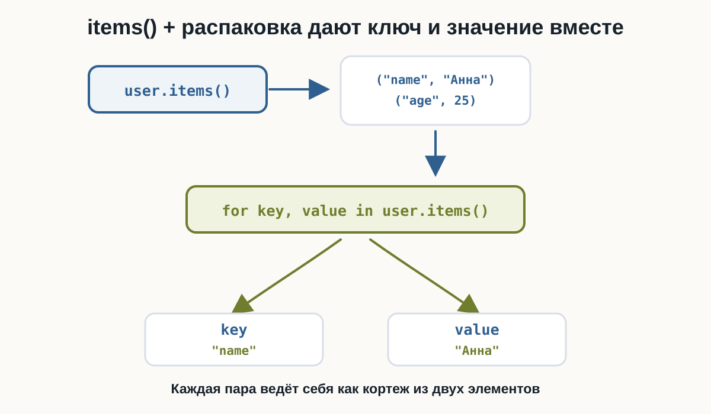
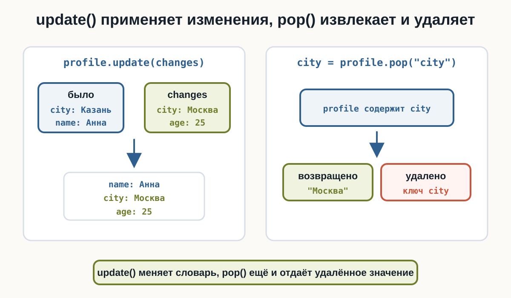
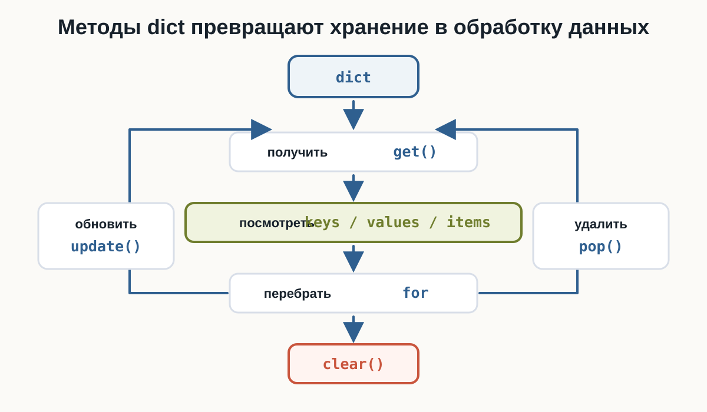

4.4 Работа со словарями
работа со словарями Python, dict Python, get Python, items Python, keys values Python, перебор словаря Python, методы словаря Python
Главный вопрос главы:
Как удобнее получать, перебирать, обновлять и очищать словарь?
В предыдущей главе мы познакомились со словарём dict: ключами, значениями, созданием словаря, прямым доступом через dictionary[key], добавлением, изменением, len(), проверкой ключа через in и удалением через del.
Теперь разберём методы и приёмы, которые нужны для работы со словарём целиком.
Безопасное получение через get()
Прямой доступ требует, чтобы ключ существовал. Если ключа нет, будет KeyError.
Метод get() работает мягче: он возвращает значение, если ключ есть, и None, если ключ отсутствует.
user = {
"name": "Анна",
"age": 25
}
print(user.get("name"))
print(user.get("email"))Результат:
Анна
NoneГлавная идея: get() не вызывает KeyError для отсутствующего ключа.

get() со значением по умолчанию
Вторым аргументом get() можно передать значение, которое нужно вернуть при отсутствии ключа:
dictionary.get(key, default)Пример:
config = {
"theme": "dark"
}
theme = config.get("theme", "light")
font_size = config.get("font_size", 14)
print(theme)
print(font_size)Результат:
dark
14default используется только тогда, когда ключа нет. Для "theme" вернулось настоящее значение "dark", а для отсутствующего "font_size" — 14.
Ключи через keys()
Метод keys() предоставляет ключи словаря.
user = {
"name": "Анна",
"age": 25,
"city": "Казань"
}
for key in user.keys():
print(key)Результат:
name
age
cityНа текущем этапе достаточно понимать:
keys()
→ ключи словаряЗначения через values()
Метод values() удобен, когда ключи не нужны и нужно обработать только значения.
scores = {
"Python": 90,
"SQL": 82,
"Git": 95
}
total = 0
for score in scores.values():
total += score
print(total)Результат:
267Здесь цикл видит только числа 90, 82 и 95.
Пары через items()
Метод items() предоставляет пары ключ → значение.
user = {
"name": "Анна",
"age": 25,
"city": "Казань"
}
for key, value in user.items():
print(key, "→", value)Результат:
name → Анна
age → 25
city → КазаньКаждый элемент items() можно распаковать в две переменные: key и value.

Перебор словаря через for
Если перебирать сам словарь, Python перебирает его ключи:
settings = {
"theme": "dark",
"language": "ru",
"notifications": True
}
for key in settings:
print(key, "=", settings[key])Результат:
theme = dark
language = ru
notifications = TrueЗапись for key in settings: означает перебор ключей. Значение можно получить через settings[key].
В файле примера есть подсказка: если нужны и ключ, и значение, items() обычно понятнее.
Перебор ключей и значений
Когда в цикле нужны сразу ключ и значение, обычно используют items():
for key, value in user.items():
print(key, value)Это связано с уже знакомой распаковкой кортежей:
key, value = ("name", "Анна")На каждой итерации новая пара из items() раскладывается по двум переменным.

Обновление через update()
Метод update() применяет сразу несколько изменений:
profile = {
"name": "Анна",
"city": "Казань"
}
changes = {
"city": "Москва",
"age": 25
}
profile.update(changes)
print(profile)В результате "city" изменится на "Москва", а новый ключ "age" добавится.
Правило такое же, как при присваивании:
ключ уже есть → значение изменится
ключа нет → пара добавитсяУдаление через pop()
В предыдущей главе было удаление через del. Метод pop() отличается тем, что возвращает удалённое значение.
user = {
"name": "Анна",
"age": 25,
"city": "Казань"
}
city = user.pop("city")
print(city)
print(user)
missing = user.pop("email", "Не указан")
print(missing)Результат:
Казань
{'name': 'Анна', 'age': 25}
Не указанЕсли ключ может отсутствовать, передавайте значение по умолчанию:
dictionary.pop(key, default)Тогда отсутствующий ключ не приведёт к KeyError.

Очистка через clear()
Метод clear() удаляет все пары из словаря:
cache = {
"user": "Анна",
"token": "ABC123"
}
cache.clear()
print(cache)Результат:
{}Словарь остаётся существовать, но становится пустым.
Изменение значений во время перебора
Во время перебора можно менять значения существующих ключей, если набор ключей не меняется.
prices = {
"Кофе": 200,
"Чай": 150,
"Сок": 180
}
for product in prices:
prices[product] += 20
print(prices)Результат:
{'Кофе': 220, 'Чай': 170, 'Сок': 200}Здесь мы не добавляем и не удаляем ключи. Меняются только значения.
Не меняйте размер dict во время for
Во время прямого перебора словаря не стоит добавлять или удалять ключи этого же словаря.
Такой код не используйте как рабочий:
for key in data:
del data[key]И такой тоже:
for key in data:
data["new"] = 100Изменение количества ключей во время итерации может привести к ошибке:
RuntimeError: dictionary changed size during iterationЗначения существующих ключей менять можно.
Количество ключей во время прямого перебора менять не стоит.
Пример: дорогие товары
С помощью items() можно фильтровать словарь по значениям.
prices = {
"Мышь": 2500,
"Клавиатура": 7000,
"Монитор": 32000,
"Кабель": 800
}
for product, price in prices.items():
if price >= 5000:
print(product, "→", price)Результат:
Клавиатура → 7000
Монитор → 32000Здесь items() даёт пару, распаковка разделяет её на product и price, а if оставляет только нужные товары.
Итоговый пример: анализ склада
Соберём get(), items(), update() и pop() в одном сценарии.
stock = {
"Ноутбук": 4,
"Монитор": 0,
"Клавиатура": 12,
"Мышь": 0,
"Наушники": 7
}
total_quantity = 0
for product, quantity in stock.items():
total_quantity += quantity
if quantity > 0:
print(product, "есть в наличии")
print("Всего единиц:", total_quantity)
webcam = stock.get("Веб-камера", 0)
print("Веб-камер:", webcam)
stock.update({
"Монитор": 3,
"Веб-камера": 5
})
removed = stock.pop("Мышь", 0)
print("Удалено мышей:", removed)
print(stock)В этом примере словарь не просто хранит данные: программа считает остатки, проверяет отсутствующий ключ, применяет поставку и удаляет позицию.
Что использовать
Краткая памятка:
| Операция | Когда нужна |
|---|---|
data.get(key) |
получить необязательное значение |
data.get(key, default) |
заменить None своим значением |
data.keys() |
пройти по ключам |
data.values() |
пройти по значениям |
data.items() |
пройти по парам key, value |
for key in data |
перебрать ключи короткой записью |
data.update(changes) |
применить несколько изменений |
data.pop(key) |
удалить ключ и получить значение |
data.pop(key, default) |
удалить ключ без ошибки при отсутствии |
data.clear() |
очистить словарь |
Что важно запомнить
get() безопасно получает значение:
data.get("email")
data.get("email", "Не указан")keys(), values() и items() дают разные взгляды на один словарь:
data.keys()
data.values()
data.items()Цикл по самому словарю перебирает ключи:
for key in data:
...items() удобно распаковывать в две переменные:
for key, value in data.items():
...update() применяет изменения, pop() удаляет и возвращает значение, clear() очищает словарь.
Во время перебора можно менять значения существующих ключей, но не стоит добавлять или удалять ключи того же словаря.

Практические задания
Задание 1. Погода
Дан словарь:
weather = {
"temperature": 18,
"wind": 4
}Получите "humidity" через get(). Если поля нет, используйте значение "неизвестно".
weather = {
"temperature": 18,
"wind": 4
}
humidity = weather.get("humidity", "неизвестно")
print("Влажность:", humidity)Задание 2. Системные параметры
Дан словарь:
system = {
"os": "Linux",
"ram": 32,
"cores": 8
}Выведите только названия параметров.
system = {
"os": "Linux",
"ram": 32,
"cores": 8
}
for key in system.keys():
print(key)Задание 3. Выручка
Даны продажи:
sales = {
"Понедельник": 12000,
"Вторник": 15000,
"Среда": 11000,
"Четверг": 17000
}Вычислите общую выручку, перебирая только значения.
sales = {
"Понедельник": 12000,
"Вторник": 15000,
"Среда": 11000,
"Четверг": 17000
}
total = 0
for value in sales.values():
total += value
print("Выручка:", total)Задание 4. Игровой инвентарь
Дан словарь:
inventory = {
"Зелье": 5,
"Стрела": 40,
"Ключ": 2
}Выведите все позиции в формате предмет : количество, используя items().
inventory = {
"Зелье": 5,
"Стрела": 40,
"Ключ": 2
}
for item, quantity in inventory.items():
print(item, ":", quantity)Задание 5. Конфигурация сервера
Изначально:
server = {
"host": "localhost",
"port": 8000,
"debug": True
}Новые настройки:
changes = {
"port": 8080,
"debug": False,
"workers": 4
}Примените изменения одной операцией.
server = {
"host": "localhost",
"port": 8000,
"debug": True
}
changes = {
"port": 8080,
"debug": False,
"workers": 4
}
server.update(changes)
print(server)Задание 6. Корзина
Дана корзина:
cart = {
"Ноутбук": 1,
"Мышь": 2,
"Кабель": 3
}Удалите "Кабель" через pop() и сохраните его количество в переменную.
cart = {
"Ноутбук": 1,
"Мышь": 2,
"Кабель": 3
}
quantity = cart.pop("Кабель")
print("Удалено:", quantity)
print(cart)Задание 7. Сессия
Дан словарь:
session = {
"user": "alex",
"active": True
}Удалите "token" через pop() так, чтобы отсутствие ключа не вызвало ошибку.
session = {
"user": "alex",
"active": True
}
token = session.pop("token", None)
print(token)
print(session)Задание 8. Изменение цен
Дан прайс:
prices = {
"Кофе": 200,
"Чай": 150,
"Какао": 220
}Увеличьте каждую цену на 10%.
prices = {
"Кофе": 200,
"Чай": 150,
"Какао": 220
}
for product in prices:
prices[product] = prices[product] * 1.1
print(prices)Задание 9. Результаты игроков
Даны результаты:
scores = {
"Alex": 1250,
"Maria": 1840,
"John": 990,
"Sofia": 1720
}С помощью items() найдите игрока с максимальным результатом. Не используйте max() как готовое решение.
scores = {
"Alex": 1250,
"Maria": 1840,
"John": 990,
"Sofia": 1720
}
best_player = None
best_score = -1
for player, score in scores.items():
if score > best_score:
best_player = player
best_score = score
print("Игрок:", best_player)
print("Результат:", best_score)Задание 10. Анализ склада
Дан склад:
stock = {
"Ноутбук": 4,
"Монитор": 0,
"Клавиатура": 12,
"Мышь": 0,
"Наушники": 7
}Нужно:
- подсчитать общее количество единиц товара;
- вывести товары, которые есть в наличии;
- получить количество
"Веб-камера"черезget()со значением0; - применить обновление для
"Монитор"и"Веб-камера"; - удалить
"Мышь"черезpop()со значением по умолчанию; - вывести итоговый словарь.
stock = {
"Ноутбук": 4,
"Монитор": 0,
"Клавиатура": 12,
"Мышь": 0,
"Наушники": 7
}
total_quantity = 0
for product, quantity in stock.items():
total_quantity += quantity
if quantity > 0:
print(product, "есть в наличии")
print("Всего единиц:", total_quantity)
webcam = stock.get("Веб-камера", 0)
print("Веб-камер:", webcam)
stock.update({
"Монитор": 3,
"Веб-камера": 5
})
removed = stock.pop("Мышь", 0)
print("Удалено мышей:", removed)
print(stock)Что дальше?
Теперь мы умеем обрабатывать один словарь: безопасно получать данные, перебирать ключи и значения, обновлять пары, удалять элементы и очищать структуру.
Следующий шаг — объединить уже знакомые структуры:
users = [
{"name": "Анна", "age": 25},
{"name": "Максим", "age": 30}
]Такие данные состоят из нескольких уровней. Это тема следующей главы — «Вложенные структуры данных».
Работа со словарями Python: краткое резюме
Работа со словарями в Python строится вокруг нескольких практичных методов. get() помогает безопасно получать необязательные значения, keys() даёт ключи, values() — значения, а items() — пары, которые удобно распаковывать в цикле for.
Метод update() применяет сразу несколько изменений, pop() удаляет ключ и возвращает его значение, а clear() полностью очищает словарь. При переборе словаря можно менять значения существующих ключей, но не стоит добавлять или удалять ключи в том же прямом цикле.